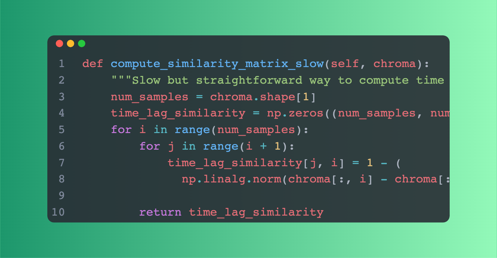

有些时候，为了设定手机铃声或者发抖音视频，我们会耗费大量时间在剪辑音乐高潮部分上。那么这个音乐高潮的提取能不能自动化呢？当然可以。
先来听听效果，孤芳自赏提取高潮后的部分：
怎么样，是不是迫不及待想往下读了？不要急，让我们从原理开始慢慢讲起。
原理简介
不知道大家有没有这样的体会，大部分时候，歌曲的高潮部分通常是重复次数最多的部分。因此我们可以根据这一个特征，提出我们的算法：
- 遍历整首歌曲。
- 将选定长度的部分与其他部分比较并计算相似度，以查看是否重复。
- 寻找重复次数较大、且间隔长的片段。
代码编写
为了避免造轮子，我们找到了别人已经做过的类似的项目：https://github.com/vivjay30/pychorus
我们只需要分析这个源代码中最核心的部分，即求相似区段的源代码，就能知道它是不是符合我们的项目需求了：

可以看到，这部分代码就是做了我们算法的第二步，进行了片段与片段之间的相似度计算。检测时用到的相似函数是这样的：
这主要是因为歌曲由12个基本音符的帧的集合而组成，v1和v2是任意两段音乐的音符矢量，如果说两段音乐非常相似，那么右边的式子将接近于0. 如果说 1-右边的式子 得分非常高，则说明两段音乐非常相似。
下面我们看看怎么使用这个项目求音乐高潮部分，其实非常简单。
安装
pip3 install pychorus
编写代码
实际上，这个包用起来可是相当简单，如果我们只是想单纯提取歌曲高潮部分：
from pychorus import find_and_output_chorus
chorus_start_sec = find_and_output_chorus("你的音乐文件", "提取结果的目标路径", 要多少秒的高潮部分)
没错，两行代码就解决了。如果你想知道一些详细的细节，比如说输出相似矩阵或者结果可视化，建议阅读github中该项目的操作指令。下面让我们检验一下效果。
效果检验
以《孤芳自赏》 为例，让我们试试这个提取器的功力。
原曲：
编写代码：
# 提取音乐高潮部分
from pychorus import find_and_output_chorus
input_file = "孤芳自赏.mp3"
output_file = "孤芳自赏_high.wav"
clip_length=40
chorus_start_sec = find_and_output_chorus(input_file, output_file, clip_length)